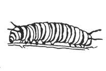
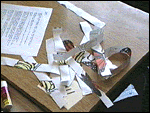
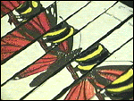
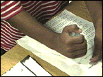
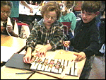
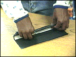
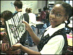

| |
Now you see it . . . |
A Butterfly Optical Illusion Activity
A monarch butterfly changes several times during its life-cycle. This activity is an optical illusion construction of two of them. Can you name the two stages pictured here?Monarch Watch
This is an activity from the Monarchs in the Classroom curriculum guide. Monarchs in the classroom is full of science and art activities related to the life cycle and ecology of monarch butterflies. Monarchs in the Classroom has been developed in cooperation with Monarch Watch

Butterflies are examples
of bilateral symmetry.
Make your own butterfly optical illusion.
Collect:
- lg black construction paper
- caterpillar pattern
- butterfly pattern
- colored pencils
- scissors
- glue
|
 color / cut both patterns |
 arrange on paper |
 put glue on strips |
 glue strips to paper |
 fold |
 unfold |

|
What other animal or insect could you use to create an optical illusion like this one? Try to name all of the stages in a monarch butterflies life-cycle. Do caterpillars ever turn into moths? |
|
|
|
|
|
|
|
|
 Gathered by topic |
 Connected together |
 Index of ideas |
 Search |


{kind=link}
{kind=link}